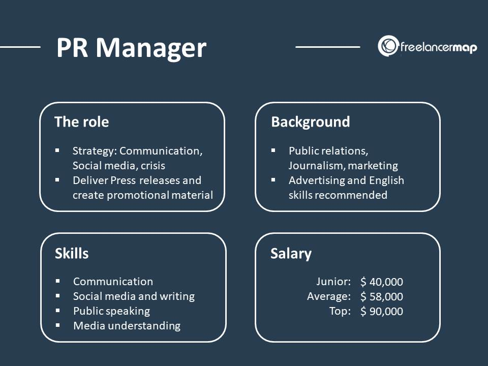

Një menaxher i marrëdhënieve me publikun ndihmon për të përmirësuar imazhin e organizatës së tyre duke sponsorizuar ngjarje të korporatave dhe duke rishikuar njoftimet për shtyp.
Ata mbajnë respektimin e tendencave politike dhe strategjitë e provave për të përmirësuar ato tendenca, si dhe testojnë ndikimin social dhe ekonomik që ka klienti ose organizata e tyre.
Me këtë informacion ata këshillojnë kompaninë për mënyrat për të përmirësuar dhe përdorur imazhin e tyre në avantazhin e tyre.